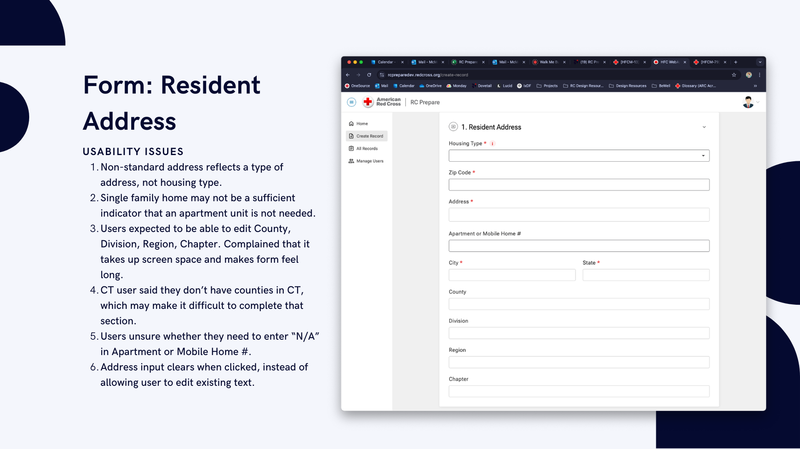
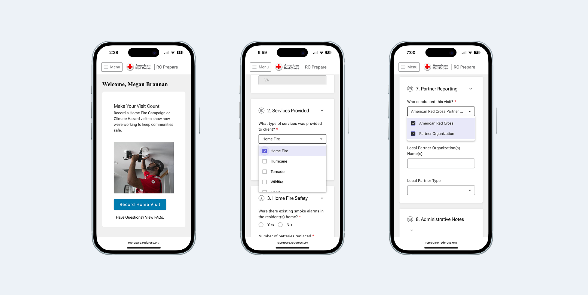

The data was only as good
as a handwritten form
on a stranger's porch.
Missing addresses, incomplete partner information, inaccurate equipment counts — the form data that drives decisions about where to focus resources was riddled with gaps. And the people filling it out weren't enterprise software users. Many volunteers are brand new — this is one of the Red Cross's lowest-barrier entry points.
The tool had to work for someone on their very first visit, on any phone, possibly with spotty connectivity, while standing outside. That constraint shaped every design decision.
Start with the workflow.
Then ask the hard questions.
I started with a task analysis of the existing paper process — talking to volunteers about where they got stuck, what they guessed at, and what they skipped entirely. The form wasn't just too long. It was unclear. Volunteers weren't sure why they were being asked something, which led to placeholder data that undermined the whole point. The biggest question that came out of that work: should the digital form be a single long page or broken into multiple steps?

Feels shorter per screen, but more network calls and harder to recover from an interrupted connection
Loads once, survives spotty connectivity. Clear visual sections reduce cognitive load without hiding information behind pagination
Ten participants.
Three critical issues found.
I ran usability testing with 10 participants — nine Red Cross volunteers and employees with direct Home Fire Campaign experience, plus a partner organization representative. Each completed a realistic scenario: log a home visit from start to finish.
Terminology mismatches caused wrong turns immediately
Two different labels for the same action on the landing page. One consistent label fixed a critical failure point with a single change.
The address section created the most friction
Tapping a field cleared it instead of placing a cursor; non-editable fields appeared but couldn't be changed. Hiding non-editable fields and fixing touch targets resolved the highest-priority issue.
Acronyms and vague questions undermined data quality
Volunteers unfamiliar with internal program names guessed or skipped questions. Plain language was a functional requirement — a volunteer who doesn't understand a question enters bad data, and bad data defeats the purpose of the tool.

Shipped. Used.
And still honest about what's next.
After launch, we ran a post-rollout survey across Red Cross regions. 21 volunteers responded — weekly users, the people this tool was built for. Every respondent rated the rollout smooth or very smooth. 90% were satisfied or very satisfied overall.
